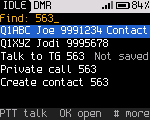
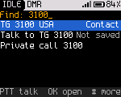

按键与导航
每个按键在每个屏幕上都做同类的事情。
五条规则
- OK 打开或选择焦点所在的项目。长按 OK 执行持久版本，例如保存或设为永久。
- 返回 返回上一级。在主屏幕上，每按一次撤销一项临时更改。长按 返回 可从任何位置回到主屏幕。
- * 打开当前操作的快速设置。长按 * 锁定或解锁按键。
- # 打开焦点项目的操作，例如某个人、通话组、消息或最近来电。长按 # 打开“最近”。
- PTT 在任何列表中与焦点所在的个人或通话组通话一次。没有焦点时，它与信道的通话目标通话。
大多数屏幕的底行是提示行。它显示附近按键在此处的作用。返回 的作用在其右端，位于 返回 键上方。
按键参考
按键以其功能命名（约定）。按键角色列出你的电台上哪个物理键承担哪项功能，也列出电台没有某个键时的替代方式。
| 按键 | 短按 | 长按 |
|---|---|---|
| OK | 主屏幕：打开 hub。列表：打开或选择 | 保存或设为永久 |
| 返回 | 返回上一级。主屏幕：撤销一项临时更改 | 回到主屏幕 |
| 上、下 | 移动焦点。主屏幕：下一或上一信道（VFO：频率步进），或用 设置 > 按键 > 主页上下键 切换区域或通话目标（信道旋钮仍在信道上）。编辑器：更改数值 | 连续重复 |
| * | 快速设置。在 FM 上用 PTT 发射时：其双音多频 | 锁定或解锁按键 |
| # | 在 FM 上用 PTT 发射时：其双音多频。否则：焦点项目的操作。主屏幕：最近来电的操作。VFO：为正在输入的频率调谐，作用同 OK | DMR 信道：通话目标选择器（选择通话组或输入 ID）。“最近”是 OK、3 |
| 0 到 9 | 主屏幕：启动查找。列表：选择编号行，或输入以筛选。VFO：输入频率。用 PTT 发射时：FM 发送该键的双音多频，DMR 无动作 | 主屏幕：快速拨号（尚未构建）。用 PTT 发射时：同短按 |
| 上一区域、下一区域 | 主屏幕：上一或下一区域 | |
| 监听 | FM：按住时打开静噪。DMR：开或关数字监听（所有通话组） | |
| 通话目标 | 通话目标选择器（DMR 信道） | 开或关双守候 |
| 功率级别 | 主屏幕：下一功率级别 | 按住 1.5 秒：紧急（紧急） |
| PTT | 发射 | |
| 信道旋钮 | 每格一步。顺时针：主屏幕上的下一信道（同 上），列表或菜单中的下一行，编辑器中的更大值。逆时针：相反 |
侧键（大多数电台上的监听、通话目标和功率级别）可以做其他工作。在设置 > 按键中设置（设置），或在电台频率中设置。
每次按键都会发出短促的按键音，除非关闭设置 > 声音 > 按键音。
按键锁定时（长按 *），PTT 仍然可用。当设置 > 加密 > 锁定时 PTT 关闭时，PTT 会发出错误提示音并显示“按键已锁：长按 * 解锁”。
移动
主屏幕是基础。其他所有屏幕距离它最多三级。
主屏幕
|-- * 快速设置
|-- OK Hub：1 联系人、2 消息、3 最近、4 区域、5 信道、6 工具、7 设置
| （没有 # 的电台在顶部显示 0 最近来电）
|-- # 最近来电的操作
|-- 长按 # 通话目标选择器（DMR）
|-- 0-9 查找
'-- 通话目标 通话目标选择器
在编号列表（hub、工具、设置、操作、快速设置）中，数字键直接选择对应编号的行。例如 OK、6 打开工具。
在长列表（联系人、信道、某个区域的信道）中，数字键按名称筛选列表，如同手机键盘拼写单词。2 是 ABC，3 是 DEF，依此类推到 9（WXYZ）。每个键把列表缩小到含有以这些字母开头单词的名称。返回 删除最后输入的键，然后再按离开列表。

查找
在主屏幕上（VFO 中除外），数字键打开查找。查找会一次搜索所有内容。输入数字。查找按以下顺序列出：
- 当前区域中该位置的信道。“12”列出信道 12。
- 把数字当作电台某个频段中的频率，按 VFO 的方式解析：“461462”列出“将 VFO 调至 461.462”。OK 在其上打开 VFO。VFO 的模式、功率和亚音保持不变。
- 区域中的信道、联系人和通话组、区域、位置（联系人、消息等）以及名称按字母匹配这些键的设置。
- DMR ID 以该数字开头的联系人（从三位数字起）。
- 数字本身，作为通话组（“通话到 TG 3100”，“未保存”）和作为私密呼叫（“私密呼叫 3100”）。
- 没有联系人使用该 ID 时的“创建联系人 3100”。OK 打开新建联系人（联系人）。
然后：
| 按键 | 作用 |
|---|---|
| OK | 转到信道或区域，调谐 VFO，打开位置或设置，立即与通话组或个人通话，或创建联系人 |
| PTT | 与焦点所在的通话组或个人通话一次 |
| # | 焦点通话组或个人的操作 |
| 返回 | 删除最后一位数字。只剩一位时，离开查找 |
设置也会响应其他名称。例如“promiscuous”可找到数字监听，“TOT”可找到发射超时。


临时更改与永久更改
操作时所做的更改（功率、静噪、亚音、时隙、色码、模式、通话目标）都是临时的。它们会持续到你切换信道或在主屏幕按 返回。主屏幕会标记已更改的字段。要把更改保存到信道，请在主屏幕或快速设置中长按 OK。电台显示“已保存到信道”。在 VFO 中，更改会自动保留，因此长按会显示“VFO 设置自动保存”。如果另一次写入正在进行，会显示“保存忙：请重试”；稍等片刻再长按 OK。
在主屏幕按 返回，每按一次清除一项，顺序如下：
- 正在输入的频率
- 横幅
- 扫描
- 回复窗口
- 数字监听
- 所有临时更改一起清除（“更改已撤销”）
按键锁
在主屏幕上长按 * 锁定按键。屏幕显示“按键已锁：长按 * 解锁”，状态行显示“L”。锁定时，PTT 和监听仍可用。其他按键会显示解锁提示。再次长按 * 解锁。在菜单中长按 * 不会锁定，因此缓慢按键不会在任务中途锁住按键。
设置 > 加密 > 自动锁键会在一段时间无按键后自行锁定按键。

浮层与横幅
短消息（“toast”）会在提示行显示约两秒。toast 显示操作结果，或某项功能不可用的原因。较长的 toast 会占用提示行上方的一行，且不会被截断。横幅会公告事件（消息、呼叫提示、电台检查结果）八秒。当关于消息或呼叫提示的横幅显示时，# 打开相关内容。在主屏幕按 返回 可隐藏它。